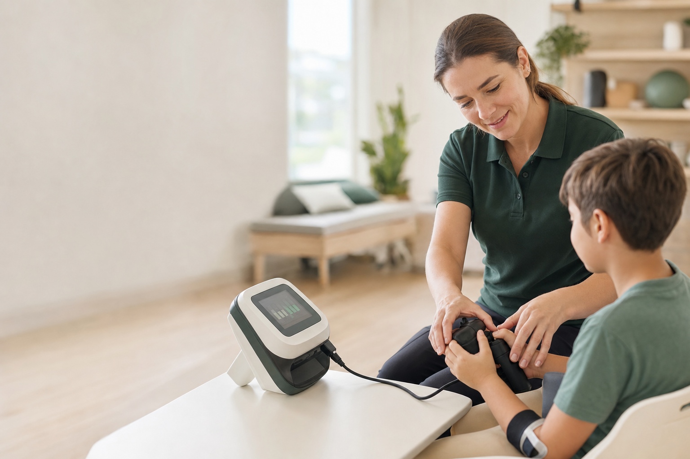

Дети с ДЦП
Оборудование и программы для регулярной двигательной реабилитации.
Фонд помогает детям и взрослым получать оборудование и программы, которые развивают движение, мимику и самостоятельность.

Фонд объединяет медицинскую экспертизу, партнеров и частных благотворителей вокруг оборудования, программ реабилитации и адресных инициатив.
Оборудование и программы для регулярной двигательной реабилитации.
Поддержка восстановления мимической функции и качества жизни.
Помощь людям, которым требуется продолжительная реабилитация.
 Tilda · TM201
Tilda · TM201Кандидат медицинских наук, главный врач Клиники Юдина, челюстно-лицевой и реконструктивный хирург.
Медицинская экспертиза помогает оценивать потребности реабилитационных центров и семей и выбирать практичные решения.
Подробнее о доктореВ карточке проекта указываются дата, получатель, состав помощи, фотография и подтверждающий материал.
организаций в архиве действующего сайта
прибора передано в одной из акций
проекты реализуются в Москве и регионах
показателей подтверждаются перед публикацией
Разовый или регулярный платеж через подключенный платежный сервис.
ПоддержатьОборудование, экспертиза, логистика или совместный проект.
Предложить проектРассказать о проверенной инициативе аудитории или сообществу.
Выбрать историюНа рабочем сайте подключается подтвержденный платежный провайдер, чек, оферта и выбор регулярности. В превью форма работает в демонстрационном режиме.
Опишите ситуацию кратко. После первичной проверки фонд сообщит порядок подачи документов.